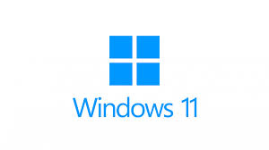

Windows 11 24H2 começa a ser liberado e estas são as principais novidades.
Postado 04 outubro 2024

Depois de meses de testes e aprimoramentos, a Microsoft começou a liberar a versão final do pacote 24H2, que traz um amplo conjunto de atualizações para o Windows 11. A novidade inclui funções orientadas por inteligência artificial (IA). Mas é preciso paciência: a liberação é gradativa.
O Windows 11 24H2 começou a ser disponibilizado em junho, mas somente em computadores de categoria Copilot+. Agora, neste mês de outubro, os demais PCs baseados no Windows 11 22H2 ou 23H2 começaram a receber a atualização.
Uma forma de ter acesso mais rápido a ela é acessando o Windows Update e habilitando a opção “Obtenha as atualizações mais recentes assim que elas estiverem disponíveis”. Depois disso, clique em “Verificar se há atualizações”. Se a opção não aparecer, tente novamente mais tarde.
Outra forma de obter acesso antecipado ao pacote é baixando a imagem mais recente do Windows 11, que já contém a atualização 24H2. Essa opção é interessante para quem vai fazer uma instalação nova.
O que o Windows 11 24H2 traz de novo?
De acordo com a Microsoft, alguns recursos do Windows 11 24H2 são exclusivos de computadores Copilot+, que são aqueles que trazem um processador com NPU de 40 TOPS ou mais. Entre esses recursos estão:
- Live Captions: usa IA para fazer legendagem de transmissões por vídeo;
- Windows Studio Effects: efeitos de áudio e imagem para serem aplicados em chamadas de vídeos, melhorando a iluminação da cena e reduzindo ruídos do ambiente, por exemplo;
- Cocreator no Paint: cria imagens artísticas a partir de instruções de texto dadas pela usuário (prompts);
- Super-Resolução Automática (ASR): usa IA para permitir que jogos compatíveis rodem com mais fluidez e detalhamento gráfico;
- Image Creator e Restyle Image no aplicativo Fotos: permite que o usuário recrie ou aplique estilos em fotos com ajuda da IA.
Já os recursos gerais, disponíveis para todos os computadores com Windows 11, incluem:
- Suporte oficial a Wi-Fi 7;
- Suporte melhorado a Bluetooth LE Audio;
- Explorador de Arquivos mais intuitivo;
- Suporte para criação de arquivos 7z e TAR no Explorador de Arquivos;
- Comando sudo para Windows;
- Compartilhamento de Wi-Fi via QR Code;
- Controles de privacidade melhorados para Wi-Fi;
- Integração melhorada com o Vincular ao Celular (Phone Link);
- Novo modo de economia de energia para notebooks.
Vale lembrar que o pacote 24H2 também marca o fim do WordPad do Windows 11.
Voltar